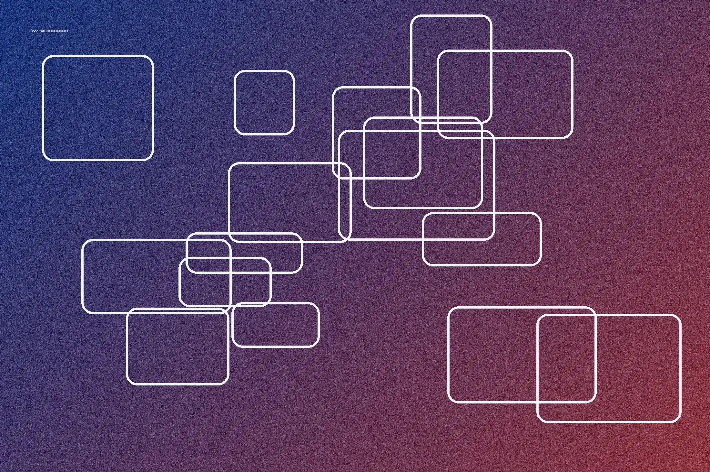
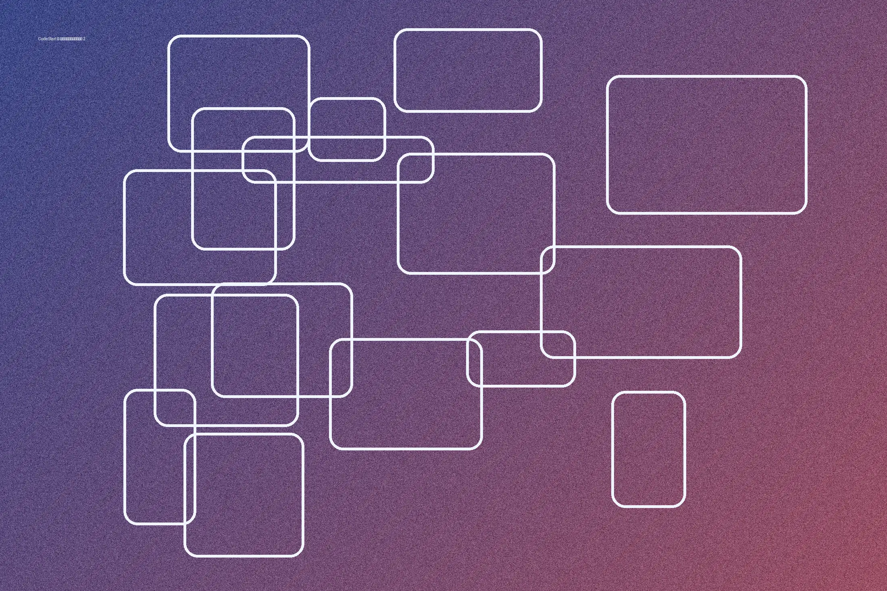
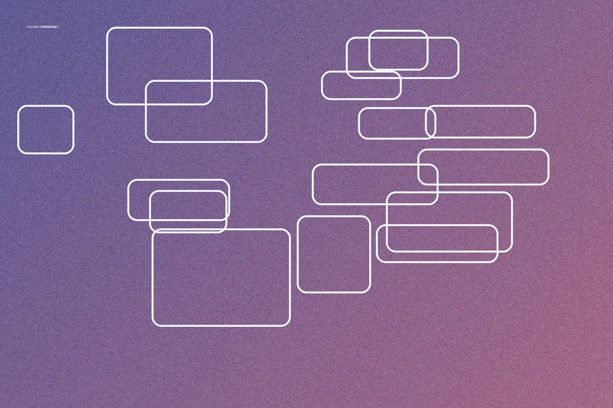

CodeStart
Как начать изучать веб-разработку
Короткий план обучения: основы HTML и CSS, практика на небольших проектах и обязательная оптимизация ресурсов.
1. Освойте базу
HTML задаёт структуру страницы, CSS отвечает за оформление, а JavaScript добавляет интерактивность. Начинайте с простых блоков и сразу закрепляйте материал практикой.

2. Делайте проекты
Создавайте лендинги, портфолио и небольшие учебные сайты. Используйте DevTools для поиска ошибок и анализа загрузки ресурсов.

3. Оптимизируйте страницу
Сжимайте графику, используйте WebP или AVIF, указывайте размеры изображений и применяйте lazy loading для контента ниже первого экрана. Это уменьшает трафик и ускоряет отображение страницы.

Результат оптимизации
После повторного тестирования сравниваются скорость, объём переданных данных и показатели PageSpeed Insights.